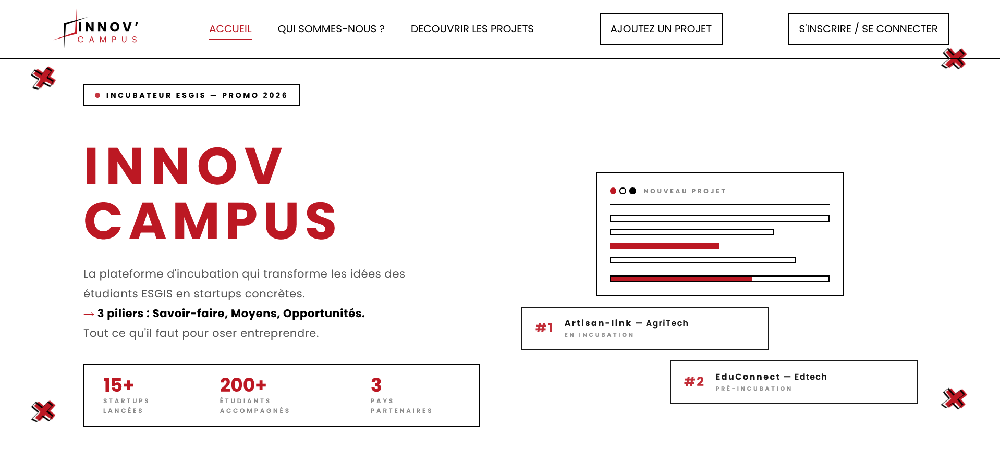

projet de groupe · php mysql js
Plateforme d'incubation
Transformer les idées des étudiants en startups concrètes.
[ ÉTUDIANTE EN CYBERSÉCURITÉ ]
sha256 · 572d1db3…52bd89
Protéger avec rigueur,
construire avec soin.
[ OK ] chargement des compétences…
[ OK ] profil vérifié
En deuxième année, je pose les bases de la cybersécurité. À côté, je code : surtout des sites web, et de plus en plus en Python et en Java.
[ OK ] 3 projets trouvés

projet de groupe · php mysql js
Transformer les idées des étudiants en startups concrètes.
[ OK ] canal ouvert
Une question, un projet, une collaboration ? Je vous réponds avec plaisir.